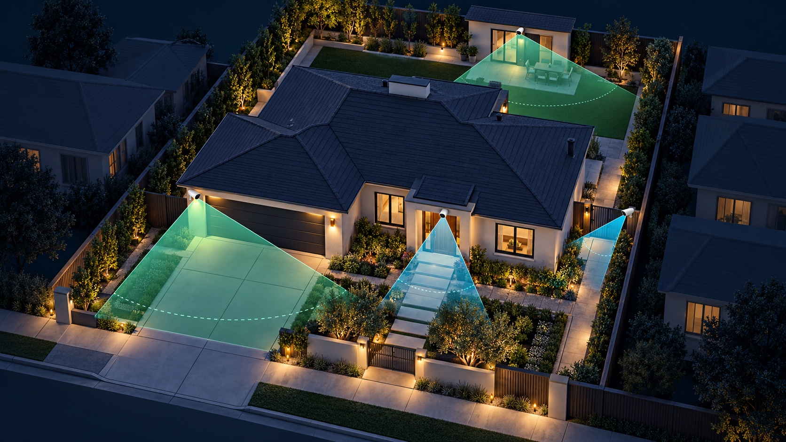
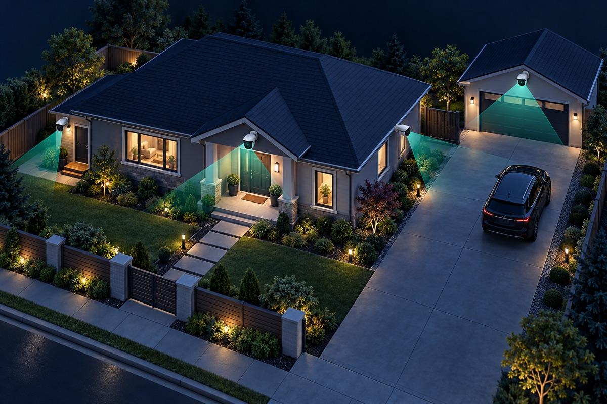

Place home security cameras where people must pass through a predictable path: the front door, driveway or garage approach, side gates and rear entrances. Give each camera one clear job—overview, recognition or identification—and verify that the recorded video delivers the detail you need in both daylight and darkness.
A wide view can show that someone entered the property, but it may not show a useful face. A tighter view near a gate or doorway can capture more detail but covers less area. Axis describes these as different operational requirements: detection, observation, recognition and identification. The required detail depends on pixel density at the subject, not only the camera's advertised resolution.
Before choosing a mounting point, write the question for that view: “Did anyone enter the driveway?”, “Who came through this gate?” or “Which vehicle used this entrance?” This prevents one ultra-wide camera from being assigned several incompatible jobs.
The front-door camera should capture a face before the visitor reaches the door and also show the package area. Avoid a steep, straight-down view that mostly records the top of a head. Place the camera so a person approaches across or toward the field of view, then check that hats, porch lights and the doorway do not hide the face.
A driveway overview camera should show vehicles and people moving between the street, garage and side paths. If reading license plates is a requirement, treat that as a separate, specialized view. Axis notes that plate capture depends on distance, angle, field of view and pixels across the plate; a high, very wide overview is usually a different job.
For a general driveway view, aim across the likely travel path and avoid filling half the frame with sky, roof or a nearby wall. If headlights wash out the scene at night, adjust the angle, exposure and lighting rather than assuming more resolution will fix it.
Side yards often create narrow, predictable paths, which makes them useful places for a focused view. Cover the gate and the route from the gate toward doors or windows. At the rear, prioritize doors and approach paths before trying to cover the entire yard with one extremely wide image.
Keep neighboring windows and private spaces outside the useful field of view where possible. Use privacy masks when the camera supports them and confirm the final framing from the recorder, not just a phone preview.
Pixel density falls as a subject moves farther from the camera or as the field of view becomes wider. Axis's IEC-based guidance uses about 25 pixels per meter for detection, 125 pixels per meter for recognition and 250 pixels per meter for identification under suitable conditions. Those figures are planning guidelines for human viewing, not a guarantee: lighting, motion, angle, compression and focus still affect results.
A practical plan often pairs one wide overview with a tighter “choke point” view at a doorway, gate or vehicle entrance. This gives context and detail without expecting one camera to do both.
Mount high enough to reduce easy tampering, but not so high that every face becomes a top-down view. Axis warns that excessive overhead angles make people and objects harder to classify or identify. Analytics also have model-specific requirements for height, tilt, minimum distance and object size, so follow the camera manufacturer's installation guide and test the actual scene.
Entrances, garages and windows often combine a dark interior with bright daylight. Axis identifies these as wide-dynamic-range scenes. Test the exact view at sunrise, midday, sunset and night when possible. Move the camera, narrow the frame or adjust lighting if direct sun, reflected infrared or a bright fixture hides the subject.
At night, check recorded motion rather than only a paused live image. A clean still frame can still turn into a blurred face when someone walks through the scene. Use our night-vision troubleshooting guide if glare, infrared reflection or motion blur reduces detail.
A good angle is not practical if the cable is exposed to damage or the Wi-Fi signal is unreliable. For wired cameras, plan protected cable routes, weatherproof penetrations and a path back to the recorder or PoE switch. For wireless cameras, test signal quality at the final mounting point and account for the wall, stucco, metal or glass between the camera and access point. Our wired-versus-wireless guide explains the power and recording differences.
Count coverage goals rather than corners of the building. A property may need separate views for context and identification at the same entrance. Start with main entry points and approaches, then address remaining blind paths and high-value areas. Our guide to how many security cameras a home needs provides a simple planning sequence.
Tech Secure 360 plans and installs residential camera systems across Greater Los Angeles. We can map coverage goals, cable routes, lighting and recorded detail before permanent mounting.

Count coverage goals and critical views before choosing a camera quantity.

Fix infrared reflection, motion blur, backlighting and lighting problems.

Compare power, recording, cable routes, remote access and maintenance.
Tell us about your place and we'll respond within one business day with a tailored plan and pricing. Or call us right now.
Your request is in. A Tech Secure 360 specialist will reach out within one business day. Need help now? Call (747) 336-2737.